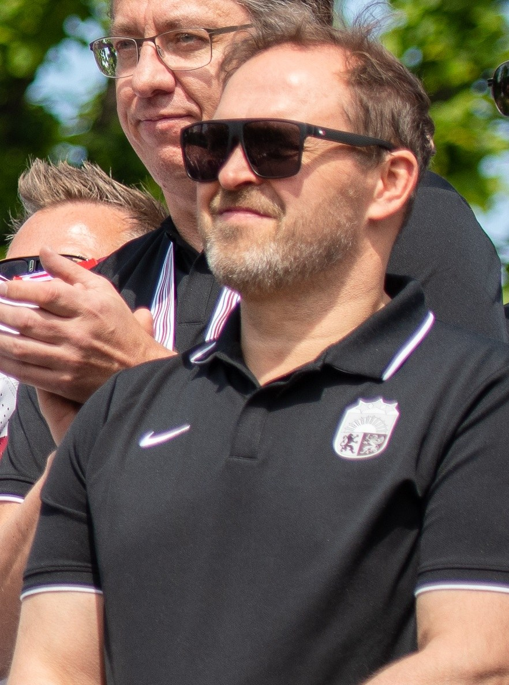
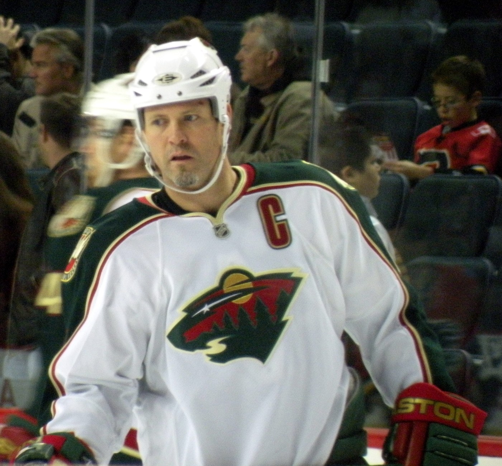
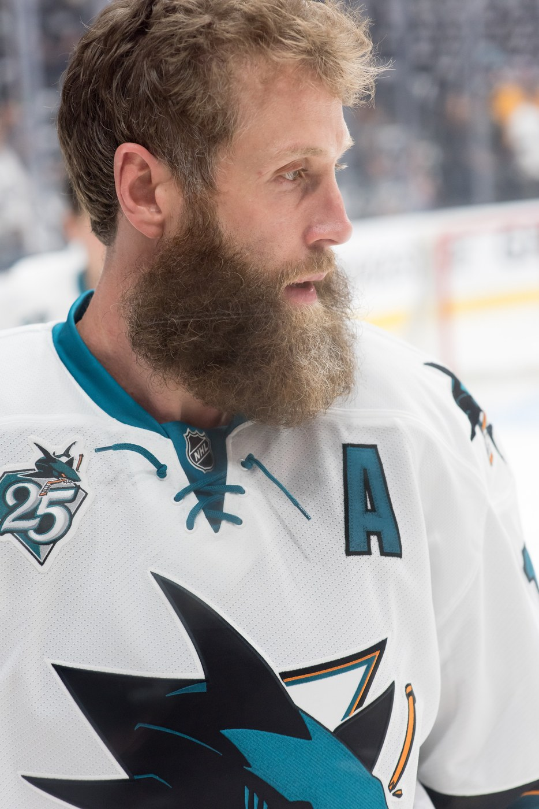
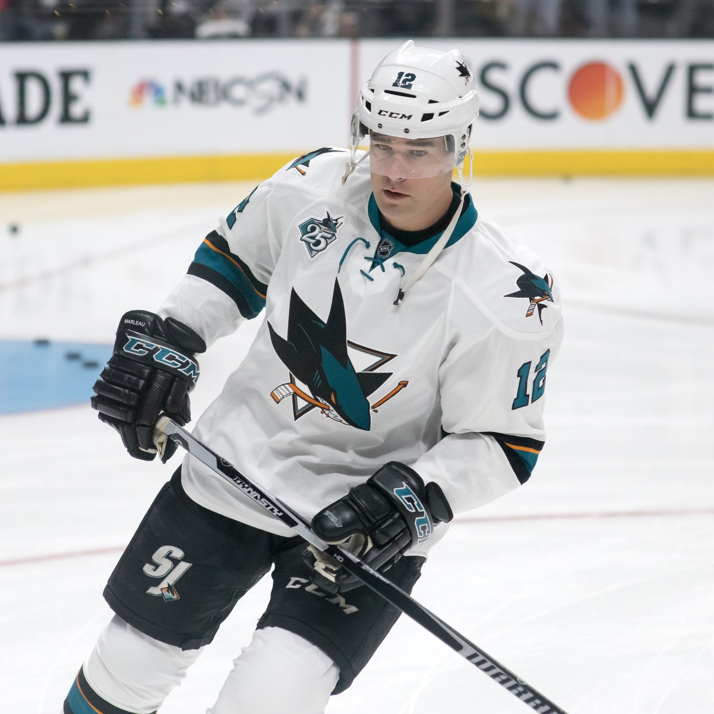
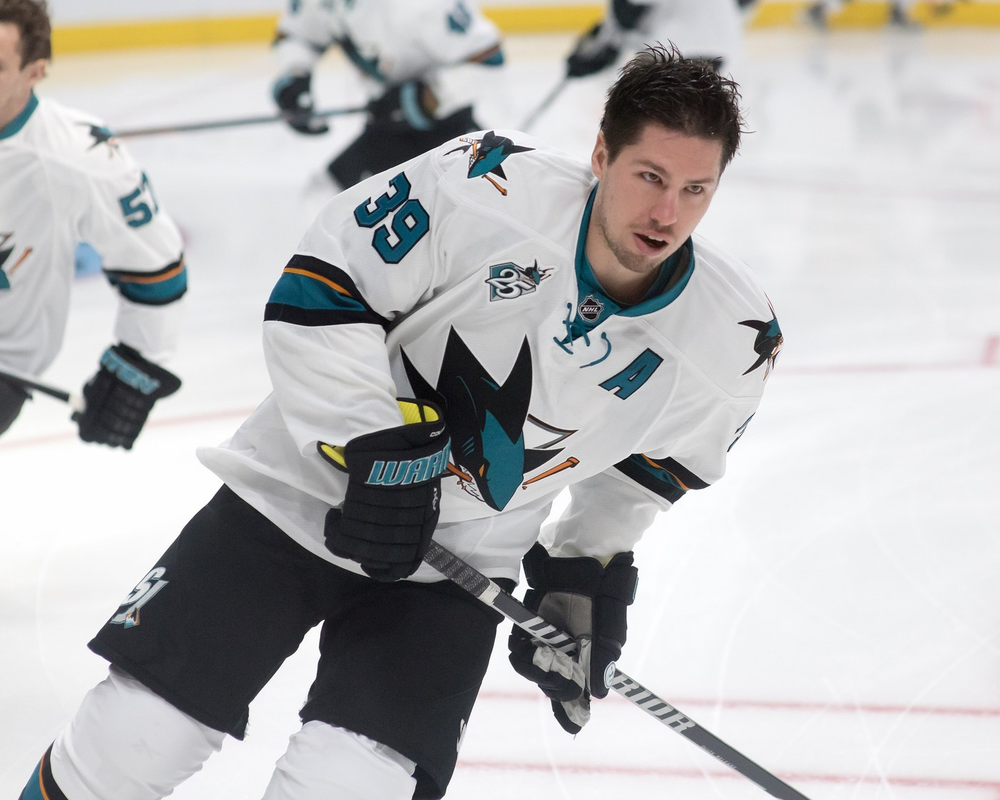
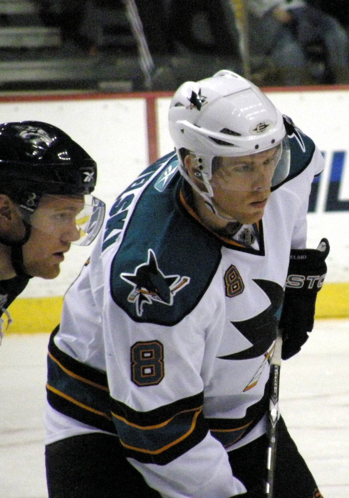

San Jose Sharks Playoff History: Every Run, Every Collapse, All of It
Twenty-one trips to the postseason, five conference finals, one Stanley Cup Final and no parade. The complete record, and the nights that still hurt.

The San Jose Sharks have reached the playoffs twenty-one times in thirty-five seasons. They've won twenty playoff series and lost twenty-one. They've played in five conference finals, reached one Stanley Cup Final, in 2016, and lost it to Pittsburgh in six games. They've never won a Cup, and they haven't been in the postseason since 2019. That's the whole record in five sentences, and every one of them is the setup for a story.
The complete playoff record, season by season
| Season | How far they got |
|---|---|
| 1993-94 | Beat Detroit in seven, lost to Toronto in the second round |
| 1994-95 | Beat Calgary in seven, swept by Detroit in the second round |
| 1997-98 | Lost to Dallas in the first round |
| 1998-99 | Lost to Colorado in the first round |
| 1999-2000 | Beat St. Louis in seven, lost to Dallas in the second round |
| 2000-01 | Lost to St. Louis in the first round |
| 2001-02 | Beat Phoenix, lost to Colorado in seven in the second round |
| 2003-04 | Beat St. Louis and Colorado, lost the Western Conference Final to Calgary |
| 2005-06 | Beat Nashville, lost to Edmonton in the second round |
| 2006-07 | Beat Nashville, lost to Detroit in the second round |
| 2007-08 | Beat Calgary in seven, lost to Dallas in the second round |
| 2008-09 | Presidents' Trophy with 117 points, out in the first round to Anaheim |
| 2009-10 | Beat Colorado and Detroit, swept by Chicago in the conference final |
| 2010-11 | Beat Los Angeles and Detroit, lost the conference final to Vancouver |
| 2011-12 | Lost to St. Louis in the first round |
| 2012-13 | Swept Vancouver, lost to Los Angeles in seven |
| 2013-14 | Led Los Angeles three games to none and lost in seven |
| 2015-16 | Beat Los Angeles, Nashville and St. Louis, lost the Stanley Cup Final to Pittsburgh |
| 2016-17 | Lost to Edmonton in the first round |
| 2017-18 | Swept Anaheim, lost to Vegas in the second round |
| 2018-19 | Beat Vegas and Colorado in seven each, lost the conference final to St. Louis |
| 2019-20 to 2025-26 | Seven straight seasons out of the playoffs |
| 21 appearances | 20 series won, 21 series lost, 0 Stanley Cups |
1994, the upset that put the franchise on the map
Third season in the league. Second season anybody could stand to watch. The Sharks finished eighth in the Western Conference with eighty-two points and drew a Detroit team with a hundred, and the series went the distance. Game 7 was 30 April 1994 at Joe Louis Arena and Jamie Baker scored at 13:25 of the third to win it 3-2, with Arturs Irbe standing on his head in goal. It was the first time an eighth seed had ever beaten a first seed in North American professional sport. Toronto ended the run in the second round, and nobody in San Jose cared very much, because a franchise that had lost seventy-one games the year before had just knocked out the best team in hockey.


The 2000s, when they were good every single year
This is the part that gets forgotten by everyone outside the market. From 2003-04 through 2018-19 the Sharks made the playoffs in every season except one. They weren't a plucky little club sneaking in either. In 2008-09 they won the Presidents' Trophy with fifty-three wins and one hundred and seventeen points, the best record in the league, and then lost in the first round to Anaheim, which is the single most San Jose thing that has ever happened.
The conference finals came in 2004 against Calgary, in 2010 against Chicago and in 2011 against Vancouver. Two of those Chicago and Vancouver teams went on to win Cups. That's the honest framing of the Joe Thornton and Patrick Marleau years: they ran into the best teams of the era, repeatedly, at the exact moment it mattered most.


2014, the collapse nobody in this market has forgiven
San Jose won the first three games of the first round against Los Angeles, 6-3, 7-2 and then 4-3 in overtime on a Patrick Marleau goal. Then they lost four in a row: 6-3, 3-0, 4-1 and 5-1. The Kings became only the fourth team in NHL history to come back from three games down, and then they went and won the Stanley Cup, which turned a bad week into a permanent piece of Bay Area sporting folklore. Marleau lost the captaincy in the aftermath. Thornton lost it too. The franchise spent a year arguing with itself in public.
2016, the one time it was actually there
They got past Los Angeles in five, survived Nashville in seven, and then beat St. Louis in six to win the Western Conference for the only time in franchise history. Logan Couture was the leading scorer of the entire postseason. Joe Pavelski wore the C. Martin Jones played the best hockey of his career. And then Pittsburgh, with Sidney Crosby at the peak of everything, won the Final in six. Not a sweep, not an embarrassment, just a better team. It remains the high-water mark and it's now ten years old.


2019, the loudest four minutes in the building's history
Game 7 against Vegas, 23 April 2019. San Jose trailed 3-0 in the third period. Cody Eakin was given a five minute major and a game misconduct on the play that left Joe Pavelski bleeding on the ice, and in the space of that one power play the Sharks scored four times, Logan Couture twice, then Tomas Hertl, then Kevin Labanc. Vegas tied it. Barclay Goodrow won it at 18:19 of overtime. The league later apologised to Vegas for the call and suspended both referees for the rest of the playoffs, which is a detail that Sharks fans have decided to live with.
They then beat Colorado in seven and lost the conference final to St. Louis in six. SAP Center has never been louder than it was on that April night, and unless something changes it never will be, because that was the last playoff game the San Jose Sharks have played.

The drought, and why this one might finally end
Seven straight seasons out, from 2019-20 through 2025-26, including back to back finishes at the bottom of the league. Thornton and Marleau went. The building emptied. In a region where the Warriors were winning titles and the Giants and 49ers took up all the oxygen, a bad hockey team in San Jose became genuinely invisible.
Last season was different in a way the standings barely captured. Thirty-nine wins, eighty-six points, a thirty-four point jump, one of the largest year over year improvements in club history, and still not enough for a playoff spot. But there's a twenty year old centre who has already broken Thornton's franchise scoring record and signed the largest contract in the sport, and that's a completely different starting point than the last rebuild had. Macklin Celebrini is the page on him.
What is left to say
The Sharks are the clearest example in hockey of a specific kind of failure: consistently very good, never quite great, and unlucky at the exact moments that decide things. There's no curse and there's no single villain, just a fifteen year run of teams that met better ones. The broader franchise story is in our franchise history page, the roster as it stands is on the depth chart, and this season's attempt gets tracked on the season hub. The regional context, including the one line on the ledger with a zero on it, is on the Bay Area championship ledger.
More coverage: Sharks section · Bay Area Sports · Bay Area Sports Blog home